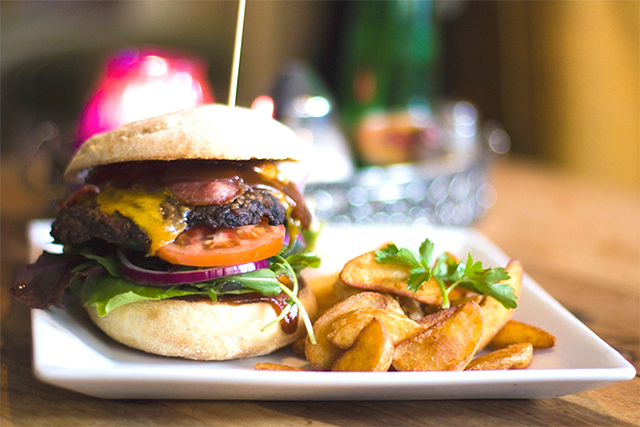

Dine Local
Kinsale is known for it's great cuisine internationally, winning both many foodie awards and being crowned the gourmet capitol of Ireland many times. So needless to say you will find many great restaurants, bistros and bars, of which Kinsale has over 40.
The Good Food Circle
Kinsale is home to many fine dining establishments. The good food circle was founded in 1976 and encompasses some of Kinsale's finest restaurant and is a quality assurance badge for great food.
Kinsale Good Food Circle website.
- Below are listed the restaurants in the good food circle
- Restaurant d’Antibes
- Blue Haven Restaurant
- Finns Table
- Fishy Fishy
- Jim Edwards
- Man Friday
- Pier One Restaurant
- Sidney’s Brasserie
- Toddies at The Bulman,Kinsale
- White Lady